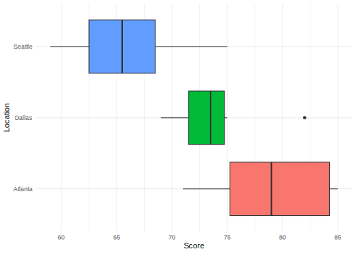
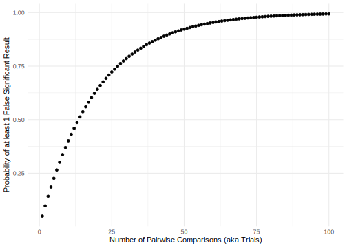
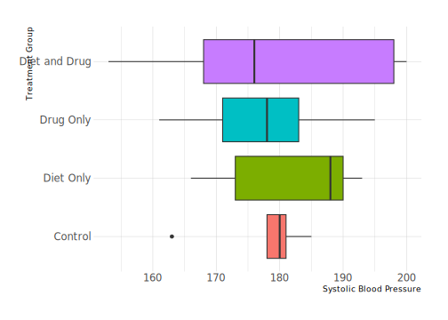
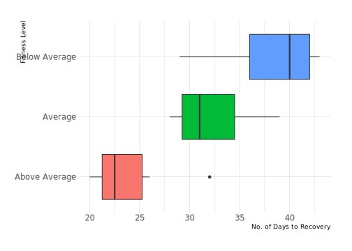
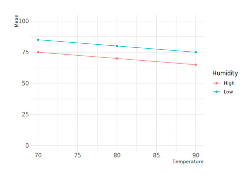
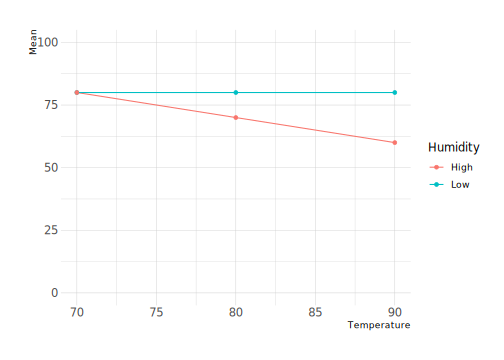

Chapter 9 Analysis of Variance (ANOVA)
The t-tests we covered in the preceding chapter allowed us to compare two groups on a numeric outcome. But what are our options when we have a numeric outcome of interest but more than two groups to compare? It may be tempting to think of carrying out pairwise comparisons, two at a time. If in doing so we find that A and B are not statistically different, and neither are A and C, but B and C are, well, what is wrong with such an approach? For example, look at the customer satisfaction scores provided by a random sample of customers served by a leading cellular phone service provider in three service locations – Atlanta, Dallas, and Seattle. I look at the means and I look at the boxplots, and it looks to me at least as if Atlanta has the highest median scores, followed by Dallas, with Seattle bringing up the rear. So couldn’t we compare Atlanta to Dallas via a t-test, then Atlanta to Seattle, and finally Dallas to Seattle, and see which pairs are statistically different?
| Observation.No. | Atlanta | Dallas | Seattle |
|---|---|---|---|
| 1 | 85 | 71 | 59 |
| 2 | 75 | 75 | 64 |
| 3 | 82 | 73 | 62 |
| 4 | 76 | 74 | 69 |
| 5 | 71 | 69 | 75 |
| 6 | 85 | 82 | 67 |
Here are some summary statistics …
| Location | Mean | Variance | Std. Dev. |
|---|---|---|---|
| Atlanta | 79 | 34 | 5.83 |
| Dallas | 74 | 20 | 4.47 |
| Seattle | 66 | 32 | 5.66 |
… and boxplots by location

The problem, as it turns out, is the issue of inflated Type I error rates. Come again? In any single comparison of two groups, A versus B, we know that if \(\alpha\), the level of significance, is set to \(0.05\), then that is essentially the probability of our rejecting the Null Hypothesis when in fact the Null Hypothesis is true (i.e., committing a Type I error). By extension, \(1-\alpha\) is the probability of no significant result so if \(\alpha = 0.05\), then \(1 - \alpha = 0.95\). Let us now calculate the probability that at least one of these pairs of comparisons throws up a significant result by chance alone …
\[\begin{align*} P(\text{no Type I error in 1 comparison}) & = & 0.95 \\ P(\text{no Type I error in 2 comparisons}) & = & 0.95 \times 0.95 = 0.9025 \\ \text{Note: P(Type I error in 2 comparisons) is} & = & 1 - 0.9025 = 0.0975 \\ P(\text{no Type I error in 3 comparisons}) & = & 0.95 \times 0.95 \times 0.95 = 0.8573 \\ \text{Note: P(Type I error in 3 comparisons) is} & = & 1 - 0.857375 = 0.1426 \end{align*}\]
Note what is happening here … in making three pairwise comparisons you are going to have a functional \(\alpha = 0.1426\) even though you think each pairwise comparison has \(\alpha = 0.05\). This is what we call the problem of multiple comparisons.
There is a way to correct for Multiple Comparisons, by using a corrected level of significance … \(\alpha^* = \frac{\alpha}{\text{No. of Trials}}\) and then modifying our decision rules such that we now reject \(H_0\) only if p-values \(\leq \alpha^*\)
| Number of Trials | Adjusted Alpha |
|---|---|
| 1 | 0.0500 |
| 2 | 0.0250 |
| 3 | 0.0167 |
| 4 | 0.0125 |
| 5 | 0.0100 |
| 6 | 0.0083 |
| 7 | 0.0071 |
| 8 | 0.0063 |
| 9 | 0.0056 |
| 10 | 0.0050 |

In fact, there is a better way to compare three or more groups – by relying on the analysis of variance (ANOVA).
9.1 The Logic of ANOVA
ANOVA is a hypothesis testing procedure that allows us to simultaneously compare three or more groups and determine if they are drawn from a common population or from different populations. What does this test look like, this ANOVA test?
The test statistic is a ratio: \(\dfrac{\text{Difference between groups}}{\text{Difference within groups}}\)
If difference between groups $ > $ difference within the groups, then it must be because something differentiates the groups such that they are noticeably different from each other. Fair enough. But how can we measure the difference between groups and the difference within groups? In fact, come to think of it, what do we mean by difference here? Well, let us break it down.
If I ignore the fact that there are three service centers and calculate the mean for all 18 satisfaction scores, I get what we call the overall mean \(\bar{\bar{x}}\) and this turns out to be \(73\). I can then see how much each satisfaction score differs from this overall mean by calculating \(\dfrac{\sum\left(x_i - \bar{\bar{x}}\right)^2}{n - 1}\). This is just the usual numerator in the sample variance calculation, and we can call it the total squared difference or, the sum of squares total (SST):
| Observation.No. | Location | Score | mean | difference | squared difference |
|---|---|---|---|---|---|
| 1 | Atlanta | 85 | 73 | 12 | 144 |
| 2 | Atlanta | 75 | 73 | 2 | 4 |
| 3 | Atlanta | 82 | 73 | 9 | 81 |
| 4 | Atlanta | 76 | 73 | 3 | 9 |
| 5 | Atlanta | 71 | 73 | -2 | 4 |
| 6 | Atlanta | 85 | 73 | 12 | 144 |
| 1 | Dallas | 71 | 73 | -2 | 4 |
| 2 | Dallas | 75 | 73 | 2 | 4 |
| 3 | Dallas | 73 | 73 | 0 | 0 |
| 4 | Dallas | 74 | 73 | 1 | 1 |
| 5 | Dallas | 69 | 73 | -4 | 16 |
| 6 | Dallas | 82 | 73 | 9 | 81 |
| 1 | Seattle | 59 | 73 | -14 | 196 |
| 2 | Seattle | 64 | 73 | -9 | 81 |
| 3 | Seattle | 62 | 73 | -11 | 121 |
| 4 | Seattle | 69 | 73 | -4 | 16 |
| 5 | Seattle | 75 | 73 | 2 | 4 |
| 6 | Seattle | 67 | 73 | -6 | 36 |
The overall squared difference (SST) turns out to be \(946\).
Okay, fair enough. Now what about the variance within each group? For this I know I have to calculate the mean for each group and then sum the squared difference of each score in the group from the group mean.
| Observation.No. | Location | Score | mean | difference | squared difference |
|---|---|---|---|---|---|
| 1 | Atlanta | 85 | 79 | 6 | 36 |
| 2 | Atlanta | 75 | 79 | -4 | 16 |
| 3 | Atlanta | 82 | 79 | 3 | 9 |
| 4 | Atlanta | 76 | 79 | -3 | 9 |
| 5 | Atlanta | 71 | 79 | -8 | 64 |
| 6 | Atlanta | 85 | 79 | 6 | 36 |
| 1 | Dallas | 71 | 74 | -3 | 9 |
| 2 | Dallas | 75 | 74 | 1 | 1 |
| 3 | Dallas | 73 | 74 | -1 | 1 |
| 4 | Dallas | 74 | 74 | 0 | 0 |
| 5 | Dallas | 69 | 74 | -5 | 25 |
| 6 | Dallas | 82 | 74 | 8 | 64 |
| 1 | Seattle | 59 | 66 | -7 | 49 |
| 2 | Seattle | 64 | 66 | -2 | 4 |
| 3 | Seattle | 62 | 66 | -4 | 16 |
| 4 | Seattle | 69 | 66 | 3 | 9 |
| 5 | Seattle | 75 | 66 | 9 | 81 |
| 6 | Seattle | 67 | 66 | 1 | 1 |
If you add the sum of squared differences for each of the three groups you will get \(170\) for Atlanta, \(100\) for Dallas, and \(160\) for Seattle. So how much is the sum of squared when calculated within each group? That turns out to be \(170 + 100 + 160 = 430\)
Now, the total sum of squared differences is composed of the sum of squared differences within groups and between groups, i.e.,
\[\text{Sum of Squares Total} = \text{Sum of Squares Within Groups} + \text{Sub of Squares Between Groups}\]
Since \(\text{Sum of Squares Total} = 946\) and \(\text{Sum of Squares Within Groups} = 430\), it must be that \(946 - 430 = 516\) is the \(\text{Sum of Squares Between Groups}\)
Now, ANOVA tests the ratio of the variance between groups to the variance within groups. So what would be these respective variances? Recall the formula for the sample variance … \(\dfrac{\sum\left(x_i - \bar{x} \right)^2}{n - 1}\)
How many groups are we calculating the variance for? \(3\). So the variance between groups would really be \(\dfrac{516}{3 - 1} = \dfrac{516}{2} = 208\)
Similarly, the variance within groups would be \(\dfrac{430}{18 - 3} = \dfrac{430}{15} = 28.66667\)
Now the ratio we are chasing … \(\dfrac{208}{28.66667} = 7.2558\)
How is this ratio distribution? It is not the \(z\) or the \(t\), but instead the \(F\) distribution that has two degrees of freedom … one for the numerator and one for the denominator. For the numerator, you have the degrees of freedom calculated as \(df_{k-1} = k - 1 = 3 - 1 = 2\) where \(k = \text{number of groups}\). For the denominator, you have the degrees of freedom calculated as \(df_{N-k} = N - 3 = 15\).
Under the assumption that the Null Hypothesis is true, i.e., that the group means are very similar, \(F\) is distributed as \(F^{k-1}_{N-k}\), and we can calculate the probability of finding, for given differences of freedom, by chance alone, \(F\) equal to or greater than a given value. Consequently, what we have is an F-statistic that is a ratio of two means – the Mean squared difference due to “treatments”, and the Mean squared difference due to chance and other factors … \(F^{k-1}_{N-k} = \dfrac{MSTR}{MSE}\)
If the probability of seeing our calculated \(F\) by chance is less than or equal to \(\alpha = 0.05\), we can reject the Null Hypothesis; else we fail to reject the Null Hypothesis. So how are the hypotheses specified?
\[H_0: \text{The group means are all the same}\] \[H_1: \text{At least one group mean is different from one or more of the other group means}\]
Alternatively, you will see the hypotheses specified as
\[H_0: \text{All population means are equal}\] \[H_1: \text{All population means are NOT equal}\]
9.1.1 Example 1: Systolic Blood Pressure and Treatments
Take for example a program that presumably lowers blood pressure, and to do so it assigns participants to one of four conditions (see table), Each participant’s systolic blood pressure is measured after two weeks of treatment. Hypothesis is that a combination (Diet and Drug) of treatments will be more effective than each individual treatment in isolation. These data are shown below.
| Control | Diet Only | Drug Only | Diet and Drug |
|---|---|---|---|
| 163 | 166 | 161 | 153 |
| 178 | 173 | 171 | 168 |
| 180 | 188 | 178 | 176 |
| 181 | 190 | 183 | 198 |
| 185 | 193 | 195 | 200 |

Do one or more of these treatments differ? Let us run an ANOVA and see what the data reveal.
\(H_0:\) There is no difference in mean systolic blood pressure between the treatment groups
\(H_1:\) All treatment groups are not the same
Overall mean \(\bar{\bar{x}} = 179\)
Mean for Control group \(\bar{x}_{Control} = 177\)
Mean for Diet only group \(\bar{x}_{Diet} = 182\)
Mean for Drug only group \(\bar{x}_{Drug} = 178\)
Mean for Diet and Drug group \(\bar{x}_{Diet+Drug} = 179\)
\(SST = 3170\)
\(SSTR = 67.6\)
\(SSE = 3170 - 67.6 = 3102.4\)
\(MSTR = \dfrac{SSTR}{k - 1} = \dfrac{67.6}{4-1} = \dfrac{67.6}{3} = 22.5\)
\(MSE = \dfrac{SSE}{n - k} = \dfrac{3102.4}{20 - 4} = \dfrac{3102.4}{16} = 193.9\)
\(F = \dfrac{MSTR}{MSE} = \dfrac{22.5}{193.9} = 0.116\)
\(p-value = 0.949\) so we are unable to reject the null hypothesis; these data suggest that there is no difference in mean systolic blood pressure between the treatment groups.
9.1.2 Example 2: Pre-surgical Fitness and Recovery Times
Does Pre-surgical fitness influence recovery times? That is, do fitter patients undergoing surgery (perhaps for total hip/knee replacement) recover faster than patients with poor fitness? To analyze this question a surgeon gathered data on a sample of 24 males aged 18-30 who underwent corrective knee surgery, measuring their prior fitness level and the number of days each needed for successful physical therapy post-surgery.
| Below Average | Average | Above Average |
|---|---|---|
| 29 | 30 | 26 |
| 42 | 35 | 32 |
| 38 | 39 | 21 |
| 40 | 28 | 20 |
| 43 | 31 | 23 |
| 40 | 31 | 22 |
| 30 | 29 | |
| 42 | 35 | |
| 29 | ||
| 33 |

\(H_0:\) There is no difference in average number of days needed to recover across the fitness levels
\(H_1:\) All fitness level groups are not the same
Set \(\alpha = 0.05\)
The calculated test statistic turns out to be \(F^{2}_{21} = 16.96\) with a probability of \(0.0000413\), leading us to reject the Null Hypothesis. These data suggest that all fitness level groups are not the same; at least one is different.
9.2 ANOVA with two independent variables (aka factors)
Thus far we have looked at a single source of differences in variation – the location one is in, relationship status, and so on. But what happens when you have more than one factor at work? For example, say you are looking at students’ 3rd grade reading scores and have recorded, in addition to the scores, both the humidity level in the classroom (Factor A), and the temperature in the classroom (Factor B). How can you figure out whether it is the humidity or the temperature that influences 3rd grade reading scores? ANOVA allows us to answer this question.
We will bypass the mathematics underlying the analysis and instead focus on the mechanics. In brief, we have two sets of hypotheses now …
\[H_0: \text{There is no main effect of Factor A}\] \[H_1: \text{There is a main effect of Factor A}\]
and then …
\[H_0: \text{There is no main effect of Factor B}\] \[H_1: \text{There is a main effect of Factor B}\]
The decision rules remain the same … we reject the Null Hypothesis if the probability of our calculated \(F\) statistic turns out to be \(\leq 0.05\) and we do not reject if the probability is \(> 0.05\).
Now, let us assume the following patterns are visible in the data.
| \(70^0\) | \(80^0\) | \(90^0\) | ||
|---|---|---|---|---|
| Low Humidity | \(\bar{x} = 85\) | \(\bar{x} = 80\) | \(\bar{x} = 75\) | \(\bar{x}_{low} = 80\) |
| High Humidity | \(\bar{x} = 75\) | \(\bar{x} = 70\) | \(\bar{x} = 65\) | \(\bar{x}_{high} = 70\) |
| \(\bar{x}_{70}=80\) | \(\bar{x}_{80} = 75\) | \(\bar{x}_{90}=70\) |
We can spell the main effects of each factor as follows:
- Main Effect of Factor A (Humidity): Difference between mean scores for high versus low humidity
- Main Effect for Factor B (Temperature): Difference between mean scores for \(70^0,\) \(80^0,\) and \(90^0\) temperatures, respectively
The Null Hypothesis for testing effects of Factor A would be \(H_0: \mu_{A1} = \mu_{A2}\), and the Null Hypothesis for testing effects of Factor B: \(H_0: \mu_{B1} = \mu_{B2} = \mu_{B3}\)
Note how the mean score drops as Temperature increases … by exactly \(5\)
Note also how the mean score drops as Humidity rises
- At \(70^0\) there is a difference of \(10\) between Low/High humidity
- At \(80^0\) there is a difference of \(10\) between Low/High humidity
- At \(90^0\) there is a difference of \(10\) between Low/High humidity
If we plot the means, the following pattern should become visible.

The key pattern evident here is that there is a constant difference in average performance as humidity goes from low to high or high to low, and then also as temperature goes up or down. Two parallel train tracks are visible, suggesting that high humidity and high temperature are not necessarily worse for learning than high humidity and medium temperature or high humidity and low temperatures. But what if this wasn’t true and the data showed something else altogether? That is, what if we had an interaction between the two factors, Factor A and Factor B?
9.3 Interaction effects
At times, we stop and wonder if there are specific combinations of the two factors that exert an additional impact on the outcome. One of the examples I am particularly fond of is that of gender-based pay inequalities. One could hypothesize that at lower educational attainment levels women are paid considerably less than men for the same job but at higher educational attainment levels this gap shrinks.
Let us stick with the humidity and temperature example for now, and see what an interaction might look like. The data shown below are for learning, humidity, and temperature, but have been modified such that the impact of temperature increases is no longer constant.
| \(70^0\) | \(80^0\) | \(90^0\) | ||
|---|---|---|---|---|
| Low Humidity | \(\bar{x} = 80\) | \(\bar{x} = 80\) | \(\bar{x} = 80\) | \(\bar{x}_{low} = 80\) |
| High Humidity | \(\bar{x} = 80\) | \(\bar{x} = 70\) | \(\bar{x} = 60\) | \(\bar{x}_{high} = 70\) |
| \(\bar{x}_{70}=80\) | \(\bar{x}_{80} = 75\) | \(\bar{x}_{90}=70\) |
Note how the mean score drops as Temperature increases …
At \(70^0\) there is a difference of \(0\) between Low/High humidity
At \(80^0\) there is a difference of \(10\) between Low/High humidity
At \(90^0\) there is a difference of \(20\) between Low/High humidity
In a nutshell, at Low humidity, raising the temperature has no impact but at high humidity, raising the temperature has an increasing impact!

This is an interaction – when the effect (impact) of a particular value of one factor depends upon the value of the other factor. Testing now involved three pairs of hypotheses …
- Main Effect of Factor A
\[H_0: \text{There is no main effect of factor A}\] \[H_1: \text{There is a main effect of factor A}\]
- Main Effect of Factor B
\[H_0: \text{There is no main effect of factor B}\] \[H_1: \text{There is a main effect of factor B}\]
- Interaction Effect of Factor A and Factor B
\[H_0: \text{There is no interaction effect of factor A and factor B}\] \[H_1: \text{There is an interaction effect of factor A and factor B}\]
9.3.1 Example 01: The Drug and Diet Example Modified
This is a modified version of the blood pressure example from before. In brief, say I want to test whether giving the patient a drug (Factor A) lowers their systolic blood pressure, or whether diet (Factor B) has an impact, and then whether a combination of both the drug and the diet (interaction of Factor A and Factor B) has an impact on blood pressure.
| No Diet, No Drug | Diet, No Drug | No Diet, Drug | Both Diet & Drug |
|---|---|---|---|
| 185 | 188 | 171 | 153 |
| 190 | 183 | 176 | 163 |
| 195 | 198 | 181 | 173 |
| 200 | 178 | 166 | 178 |
| 180 | 193 | 161 | 168 |
The hypotheses would be …
- Main Effect of Drug
\[H_0: \text{There is no main effect of the drug on blood pressure}\] \[H_1: \text{There is a main effect of the drug on blood pressure}\]
- Main Effect of Diet
\[H_0: \text{There is no main effect of the diet on blood pressure}\] \[H_1: \text{There is a main effect of the diet on blood pressure}\]
- Interaction Effect of Drug and Diet
\[H_0: \text{There is no interaction effect of the drug and diet on blood pressure}\] \[H_1: \text{There is an interaction effect of the drug and diet on blood pressure}\]
For (a) the F turns out to be 28.571 with a p-value of about 0.0000657, so we can reject the Null; these data suggest that the drug does have a main effect on blood pressure.
For (b) the F is 0.643, with a p-value of 0.434 so we are unable to reject the Null; these data suggest that the diet does not have a main effect on blood pressure.
For (c), the F is 0.071, with a p-value of 0.793 so again we are unable to reject the Null; these data suggest that there is no interaction effect of drug and diet on blood pressure.
9.3.2 Example 02: Pedagogy, Subject, and Learning
In this example we have three subjects, each taught via the traditional lecture method versus using computers. Students’ scores are recorded for each subject and method.
| Statistics/Standard | English/Standard | History/Standard | Statistics/Computer | English/Computer | History/Computer |
|---|---|---|---|---|---|
| 44 | 47 | 46 | 53 | 13 | 45 |
| 18 | 37 | 21 | 42 | 10 | 36 |
| 48 | 42 | 40 | 49 | 16 | 41 |
| 32 | 42 | 30 | 51 | 11 | 35 |
| 35 | 39 | 29 | 47 | 16 | 38 |
| 27 | 33 | 20 | 34 | 6 | 33 |
The hypotheses would be …
- Main Effect of Subject
\[H_0: \text{There is no main effect of the subject on scores}\] \[H_1: \text{There is a main effect of the subject on scores}\]
- Main Effect of Method
\[H_0: \text{There is no main effect of the method on scores}\] \[H_1: \text{There is a main effect of the dmethod on scores}\]
- Interaction Effect of Subject and Method
\[H_0: \text{There is no interaction effect of the subject and the method on scores}\] \[H_1: \text{There is an interaction effect of the subject and the method on scores}\]
The results will show that subject has a main effect on scores – F is 10.737 with a p-value of 0.000304, and there is an interaction of subject and method – F is 25.629 with a p-value of 0.000000323. However, the method has no main effect on scores.